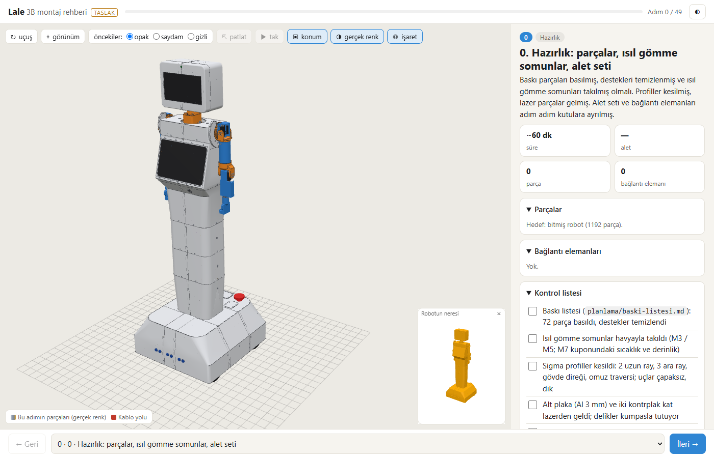
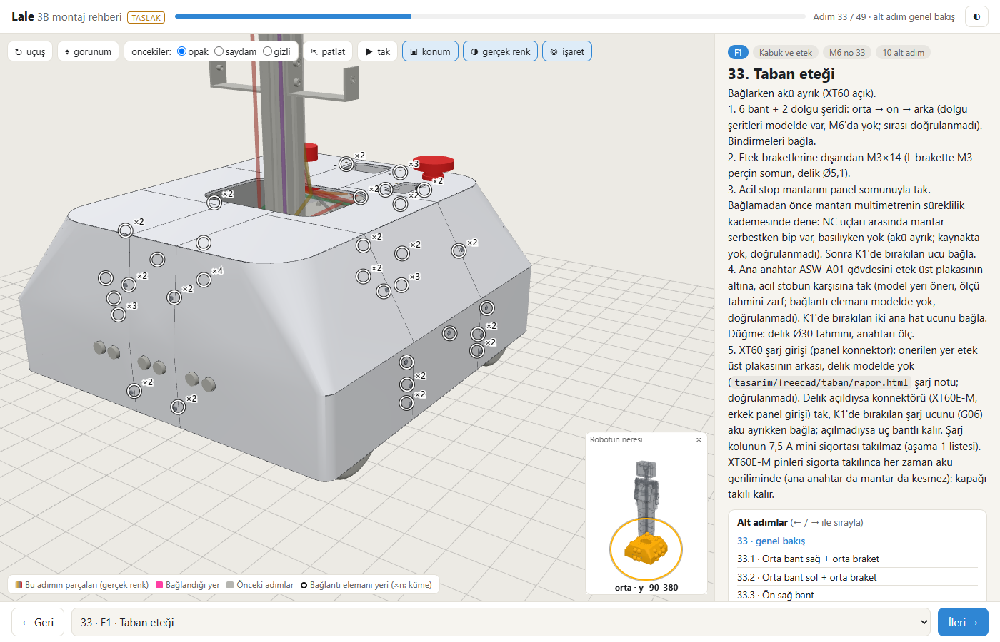
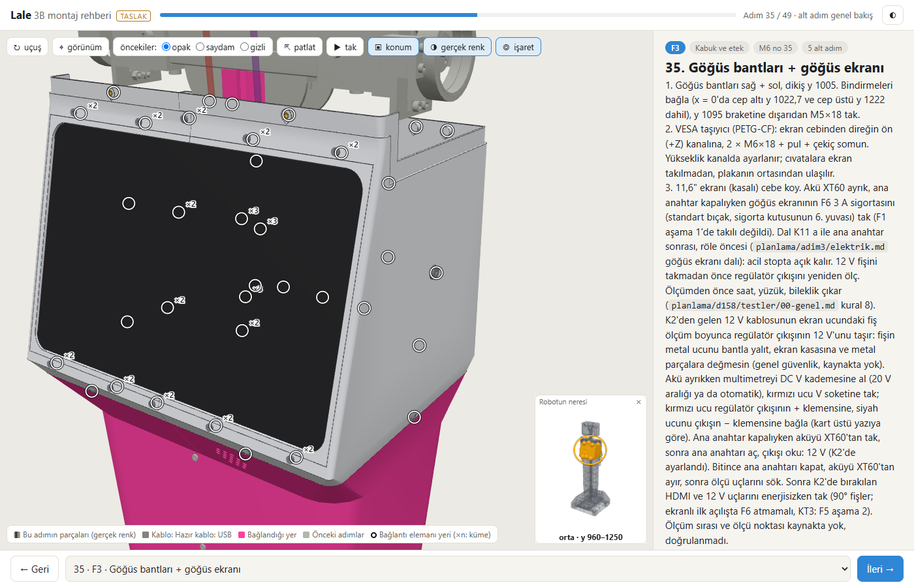
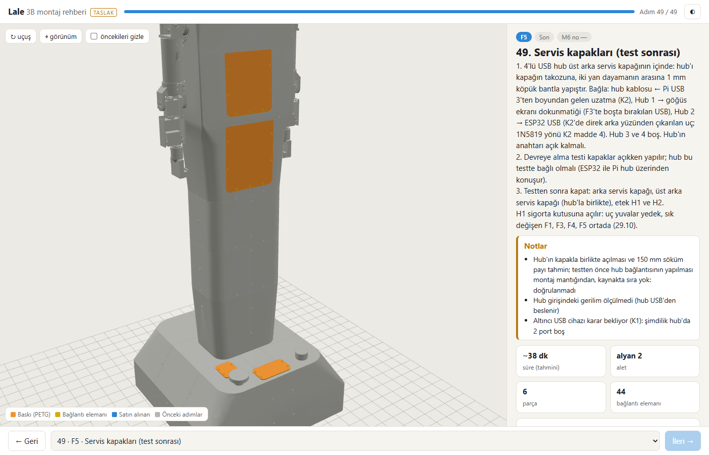

Lale F7a: 3B montaj rehberi 1,58 m modelinden (P7.1)
Ajan C (ölçüm ve kayıt) · 09.11.2026 · dal lale-duzeltme · kaynaklar: F7a-brief.md, F7a-gunluk.md (düzeltme turu 1 dahil), F7a-kontrol.md (yeniden kontrol: GEÇER), R-gunluk.md, rehber/veri/rehber-veri.json, planlama/rehber/kontrol.json
kontrol.json (16:30); konsol hatası 0carpisma_kos.py kontrol 0, regresyon.py --yazma 0 (10/10 aynı)C'nin commit öncesi koşuları (FreeCAD açılmadı, tarayıcıda yeniden üretim yapılmadı; rehber verisi ve görüntüler A'nın 16:27–16:30 koşusundan, B 16:36'da kendi Chrome koşusuyla 50/50 doğruladı): carpisma_kos.py kontrol çıkış 0 (16:39:11); regresyon.py --yazma çıkış 0 (16:39:20). Takma ad araması, ad komut satırına ve hiçbir dosyaya yazılmadan, çalışma anında türetilerek yapıldı (büyük / küçük harf ve Türkçe i / İ / ı biçimleri dahil).
Kabul ölçütleri (C'nin ölçümleri)
| Ölçüt | Ölçülen | Kaynak | Durum |
|---|---|---|---|
| 48 + F5 adım (+ hazırlık) | 50 adım (0 hazırlık, A1 … H1, F5) | rehber-veri.json adimlar | GEÇER |
| Her model parçası tam bir adımda | 1192 parça; atanmamis []; her_parca_tek_adimda.gecti true, birden çok adımda {}, hiç görünmeyen [] | rehber-veri.json, kontrol.json ozet | GEÇER |
| Rehber ↔ mesh | parca_rehber 1192, parca_mesh 1192 | kontrol.json ozet | GEÇER |
kontrol.json tüm adımlarda geçer | 50 / 50 (sonuc[*].gecti hepsi true; her adımda fark ve eksik_mesh boş) | kontrol.json, tarih 2026-11-09 16:30 | GEÇER |
| Konsol hatası | 0 | kontrol.json ozet.konsol_hatasi | GEÇER |
| Veri 1,58 m modelinden | kaynak.cad: iskelet 14:27, omuz 14:27, kabuk 14:28, dirsek 14:28, taban 14:29, kafa 08:54 (09.11) = F6a modül FCStd'leri (a051281); uretim 16:28 | rehber-veri.json kaynak.cad; B: GLB boyu 1580,0 mm | GEÇER |
carpisma_kos.py kontrol | çıkış 0 ("izlenen 17 dosyanin ozetleri kayitla ayni") | C, 16:39:11 ve rapor push'undan önce | GEÇER |
regresyon.py --yazma | çıkış 0, 10/10 "aynı" (tablo aşağıda) | C, 16:39:20; taban 14:30:50 | GEÇER |
| Takma ad | Commit'in 66 dosyasında 0 (robot-glb.js base64 çözülmüş hâliyle, 50 PNG dahil); staged diff'in eklenen satırlarında 0; git grep --cached -il yalnız kapsam dışı 3 dosya: CLAUDE.md, kod/ortak/eklem_sinirlari.json, tasarim/freecad/index.html | git grep -il, staged içerik | GEÇER |
| F6b dosyası commit'te | 0 (git diff --cached --name-only F6b / F4c / y2 / baskı / kilit / dongu-158 / karar-kuyrugu taraması boş) | commit'ten önce | GEÇER |
Regresyon değerleri (regresyon.py --yazma, 16:39:20)
| Değer | Taban | Şimdi | Eşik | Durum |
|---|---|---|---|---|
boy_mm | 1580 | 1580 | 1580 ± 0,05 | aynı |
cakisma_kafa_ici | 0 | 0 | 0 | aynı |
cakisma_kabuk_ici | 0 | 0 | 0 | aynı |
cakisma_kabuk_x_iskelet | 0 | 0 | 0 | aynı |
cakisma_ev_pozu | 0 | 0 | 0 | aynı |
rampa_yuksuz | 1,519 | 1,519 | ≥ 1,5 | aynı |
tilt_payi | 3,64 | 3,64 | ≥ 3 | aynı |
pan_payi | 2,21 | 2,21 | ≥ 2 | aynı |
mik_hoparlor_mm | 574,3 | 574,3 | ≥ 400 | aynı |
sy8205_x_usb_mm3 | 0 | 0 | 0 | aynı |
Sonuç: "GEÇER (hepsi okundu, kötüleşen yok)". Tarama kaynaklarına dokunulmadığının kanıtı; A'nın 15:43, 16:02, 16:32 ve B'nin 16:36 koşularıyla aynı.
Parça sayımı (model ↔ rehber, modül modül)
| Modül | Model (FCStd, m6_yukle kuralı) | Rehber (rehber-veri.json) | Fark |
|---|---|---|---|
| iskelet | 59 | 59 | 0 |
| omuz_sag / omuz_sol | 73 / 73 | 73 / 73 | 0 |
| kabuk | 357 | 357 | 0 |
| dirsek_sag / dirsek_sol | 57 / 57 | 57 / 57 | 0 |
| kafa | 161 | 161 | 0 |
| taban | 355 | 355 | 0 |
| Toplam | 1192 | 1192 | 0 |
Rehber sütunu C'nin rehber-veri.json sayımı; model sütunu A'nın FreeCAD dökümü ve B'nin FCStd Document.xml okuması (ikisi aynı). Tür: Bağlantı 893, Satın 210, Baskı 72 (baskı listesiyle aynı), Referans 13 (12 kablo şeması: K1'de 7, K2'de 5; ana anahtar düğmesi gösterimi F1), Lazer 3, İmalat 1. Gerekçeli hariç tutma (m6_yukle.HARIC, eskisi gibi): omuz dosyasındaki "Omuz traversi" kopyası ve "Govde kabugu yan yuzu (referans)", sağ + sol 4 nesne; asılları iskelet A3'te ve kabukta. Seçiciler yeni dosyada: tasarim/freecad/rehber/rehber_secici.py (rehberin kendi katmanı; M6_erisim.py, M6_ek.py, M6_erisim_sonuc.json ve M6-montaj-sirasi.md değişmedi).
Adım başına yeni görünen parça (kontrol.json)
"+ alt" = o adımda robota bağlanan tezgâh alt montajı (önceki tezgâh adımlarında sayıldı). A1 29 · A2 15 · A3 15 · B1a 46 · B1 28 + alt 46 · B2a 28 · B2b 20 · B2 16 · B3 28 · B4 24 · C0 30 · B5a 39 · B5 8 + alt 39 · B6a 80 · B6 8 + alt 80 · B7 14 · K1 7 · C1 48 · D1a 22 · D1b 20 · D1c 4 · D1 16 + alt 46 · E1a 27 · E1 6 + alt 27 · E2a 2 · E2b 7 · E2c 18 · E2 14 · E3a 23 · E3 4 + alt 23 · E4 60 · K2 5 · F1 62 · F2 87 · F3 54 · F4 18 · G0 16 · G1 14 + alt 16 · G2 28 · G3 26 · G4 12 · H0a 42 · H0b 4 · H0c 28 · H0d 4 · H0e 10 · H0f 10 · H1 16 + alt 98 · F5 50. Toplam 1192.
Düzeltme turu 1 (F7a-kontrol O-1, O-2)
B'nin "havada parça" taraması (her adımda yeni görünen parçanın kutusu o adımda görünen başka bir parçaya 1,5 mm payla değiyor mu) tüm modelde tam 2 parça buldu. İkisi de 125 cm seçicilerinden kalmaydı. A seçiciyi ve metni düzeltti, veriyi ve 50 adımı yeniden üretti (16:27:34–16:30:57); B dar yeniden kontrolde havada parçayı 0 buldu ve başka hiçbir parçanın adımı değişmedi.
| # | Parça | Önce | Sonra | Gerekçe ve değişiklik |
|---|---|---|---|---|
| O-1 | 625ZZ rulman (iç bilezik), kafa | E2b (boyun mili), eğme çatalından önce havada | E2 (tilt servosu) | E2b seçicisindeki "ic bilezik" eşleşmesi 6808'lerle sınırlandı: _ve(_ad("6808"), _ad("ic bilezik")). Parça tilt pimi M5 ve çatal yanağında (y 185…193); E2 metni zaten "Karşı yanağa 625ZZ ve M5 pimi tak". |
| O-2 | Ana anahtar ASW-A01 gövdesi, taban | B5a güç paneli tezgâhında, panelle teması yok | F1 (taban eteği) | Model gövdeyi etek üst plakasının altına, acil stobun karşısına koyuyor (taban_parcalar.py:10, :392, :444). İkinci B5a satırından çıkarıldı, F1 satırına eklendi; ilk B5a satırına (y > 170) _degil(_ad("Ana anahtar")) eklendi. Metin: B5a'da ana anahtar yok; K1'de uçlar bırakılır; F1 madde 4 yeri "öneri, doğrulanmadı" diye işaretli. |
Adım sayıları önce / sonra
| Adım | Önce (16:02) | Sonra (16:30) |
|---|---|---|
| 12 B5a | 40 | 39 |
| 13 B5 (alt montaj) | 8 + alt 40 | 8 + alt 39 |
| 26 E2b | 8 | 7 |
| 28 E2 | 13 | 14 |
| 33 F1 | 61 | 62 |
Aynı turda kapananlar: D-2 (günlükteki görüntü saatleri, R-gunluk.md "16 görüntü"), D-6 (app.js:294 "(erişim notuna bak)"), commit listesine F7a-brief.md eklendi, FREECAD-KILIT.txt commit dışı.
Göğüs ekranı F3'te (ayrı adım açılmadı)
- Sıra: bant → VESA taşıyıcı (2 × M6×18 + pul + çekiç somun, direk ön kanalı, cepten) → ekran (4 × M4×12 + pul, arkadan, üst arka kapak açıkken) → çerçeve sağ + sol (8 × M3×6 ISO 7380 → ısıl gömme).
- F3'teki göğüs ekranı parçaları 34: ekran, taşıyıcı, çerçeve 2, çerçeve cıvatası 8 + ısıl gömme 8, taşıyıcı M6×18 2 + pul 2 + çekiç somun 2, VESA M4×12 4 + pul 4. F3 toplamı 54.
- F3 "Notlar"da doğrulanmadı diye işaretli 6 madde: sıra kaynakta yok; VESA delik yeri ve vida derinliği; taşıyıcı ↔ K2 kafa 12 V hattı çakışması; port yeri; HDMI'nin boyundan, dokunmatiğin hub'dan gelmesi (teyit yok); 12 V dalı giriş noktası ve acil stop (
elektrik.mdK11). - K2'ye madde 6 eklendi: göğüs ekranı HDMI + 12 V uçları göğüs hizasında bırakılır.
- Kaynaklar:
lale158/lale158_rapor.pybağlantı tablosu ve açıklar,lale158/kablo_yolu_ekran.py,planlama/adim3/elektrik.md.
Adım görüntüleri (A'nın 16:28–16:30 koşusu)




Tüm görüntüler planlama/rehber/goruntu/adim-00.png … adim-49.png (50 dosya; 8'i 15.10'dan güncellendi, 42'si yeni). A 16 adıma, B ayrıca 12, 26, 28, 33 ve 35'e gözle baktı; C bu dört görüntüye baktı, metin ve kadraj adımla tutarlı.
P7.2'ye kalanlar
- Kafa metinleri (E3a, E4): E3a metni hâlâ kamera ve 7" LCD diyor; kamera, QLED, tırnaklar, ReSpeaker, USB ses kartı, PAM8403, tabla → raf cıvataları artık E4'te görünüyor. E4
baglanti_md'si QLED tırnaklarını, kamera ve ReSpeaker vidalarını saymıyor. Ayrı kafa ekranı adımı istenirse adım sayısı 51 olur. - Ses: hoparlör grubu F2'de görünür, F2 metninde yok; PAM8403 → hoparlör kablosu.
- Hub: 4'lü hub + köpük bant F5'te görünür, F5 metninde yok; hub uzatması, göğüs dokunmatiği ve ESP32 USB bağlantıları.
- K2 madde 3 ("ESP32 USB … direk ön yüzü → boyun") 05.11 kararıyla çelişiyor (ESP32 USB hub'dan çıkar). Taban kablo şeması 8'in adı ("kafada 5 V/5,5 A çevirici (Pi 5, LCD)") eski; yollar
taban_parcalar.py'de. lale158/kablo_yolu_ekran.pygöğüs ekranı yolları rehber şemasına girmedi.- Parça listesi gruplama: aynı kod tek satırda, ilk parçanın adıyla (F2 "Gövde alt bandı sağ ×11", H0a "Dirsek servosu MG996R ×4", F5 "Arka servis kapağı ×4", F1 "Etek arka sağ ×8"). Yanıltıcı.
- TR sözlüğü eksikleri ("mantari", "cikis", "govdesi" ASCII kalıyor).
- Yazdırılabilir sürüm (madde C), telefon görünümü (390 × 844), bazı adımlarda yakın kadraj.
M6_erisim.py1,58 m'de koşulmadı; erişim sınıfları 125 cm'den. Yeniden koşulursa adımlarrehber_secici.py'den alınmalı.M6-montaj-sirasi.mdtablosu için güncelleme önerisi F7a günlüğünde (dosya değiştirilmedi).
Açıklar
- doğrulanmadı Göğüs ekranı montaj sırası kaynakta yok; F3'teki sıra erişim notlarından çıkarıldı, metinde işaretli.
- yargı Kaynakla gerekçeli ama montajda denenmemiş atamalar: ısıl gömme somunlar bağlı oldukları cıvatanın adımında (etek H1 / H2 kapak ısıl gömmeleri fiziksel olarak etek plakasında ama F5'te; kafa dikiş ısıl gömmeleri E4'te); kamera E4'te; hoparlör F2'de; hub F5'te (B D-1, bilgi).
- doğrulanmadı Ana anahtar gövdesinin yeri modelde "öneri, tahmini zarf"; bağlantı elemanı modelde yok (F1 madde 4).
- P7.2 Kafa adımlarının metni görünen parçalarla şu an uyumsuz (madde 1).
- süreç
FREECAD-KILIT.txtOneDrive'da bir kez eski içeriğe geri döndü (15:55:39). F6b de aynı dosyayı kullanıyor: kilit dosyası OneDrive dışında olmalı ya da yazdıktan sonra birkaç saniye beklenip yeniden okunmalı (öneri; dosya bu commit'lere girmedi). - araç
rehber_uret.pyçıktı yolları sabit (B D-5); B kendi koşusunu ayrı betikle yaptı.
Kayıt
| Commit | Konu | Dosya |
|---|---|---|
887bcfe | Rehber 1,58 m: rehber_secici.py (yeni), rehber_veri.py, rehber_metin.py, rehber_uret.py; rehber/app.js, index.html, stil.css; veri (rehber-veri.json/.js, robot.glb, robot-glb.js); kontrol.json; 50 adım PNG'si; R-gunluk.md; F7a-brief.md, F7a-gunluk.md, F7a-kontrol.md | 66 |
Push: 22bcfd2..887bcfe lale-duzeltme → lale-duzeltme. B'nin kesin git add listesiyle (4 betik + 3 web + 4 veri + kontrol.json + 50 PNG + R-gunluk.md + 3 F7a belgesi = 66); glob açılımı önceden sayıldı (adim-*.png 50). git diff --cached --stat: 66 dosya, +12.025 / −5.559 satır; F6b dosyası yok. Dışarıda: FREECAD-KILIT.txt (koordinasyon), dongu-158.md ve karar-kuyrugu.md (orkestratör / F6b C), F6b alanı (planlama/y2/, baski-listesi.md, F4c-*, F6b-*, baski_*, baski-analiz.json), K23 (13 kabuk PNG + montaj/yerlesim-kontrol.json), kvkk/, rapor/, raporlar/, tubitak-2209b/, tasarim/solidworks/, kafa-yerlesim/kaynak/, lale_dongu.*, F5-pano-govde.txt, F5b-pano-govde.txt. Bu rapor ayrı commit'te.